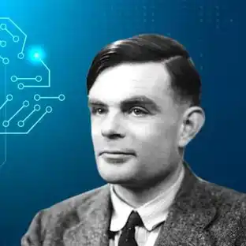

1. ¿Quién fue Alan Turing? -Alan Turing fue un matematico y criptografo que creó la maquina enigma que ayudó a acortar la guerra y salvar muchisimas vidas. 2. ¿Cuándo fue utilizada la máquina Enigma? ¿Qué hacía? -La maquina enigma fue utilizado durante la segunda guerra mundial, con el proposito de decifrar los mensajes secretos del ejercito Nazi 3. ¿Cada cuánto cambiaban las combinaciones de la máquina Enigma los alemanes? -Los alemanes cambiaban las combinaciones cada 24 horas. 4. Según Turing, ¿qué puede vencer a una máquina? -Segun Turing, solamente una maquina podria vencer a otra. 5. Según el cálculo de Hugh Alexander, ¿cuántas posibilidades tiene la máquina Enigma? -Segun Hugh Alexanderr, la maquina enigma tenia 159 trillones de posibilidades de configuración, aproximadamente. 6. ¿Cómo quería Turing que evolucionara su máquina universal (Christopher)? -Turing queria que la maquina evolucione como una transición directa hacia la creación del cerebro artificial. (Referencia: minuto 43:50) 7. Según usted, ¿las máquinas pueden pensar como los humanos? ¿Qué pensaba Turing al respecto? ¿De qué trata el juego de la imitación? Recuerde que Turing lo propuso en 1950. -Hoy en dia pienso que las maquinas piensan mucho; Turing pensó y buscó que la maquina sea mas inteligente que un humano. El juego de la imitación era una prueba en donde demuestra si las maquinas pueden pensar 8. Investigue ¿qué es hoy conocido como el Test de Turing?, ¿y qué inteligencia artificial pudo engañar al juez en 2014? -Hoy en dia, el test de turing es una prueba en donde el juez tiene que adivinar quien es la maquina y quien el humano, mediante preguntas; La Maquina que engañó al juez en 2014 tenia el nombre de eugene goostman (programado como un niño de 13 años) Investigue las siguientes referencias de la película "El Código Enigma": • El cianuro en el laboratorio de Turing, al comienzo de la película. • Las manzanas que Turing regala a sus compañeros. -Turing habia muerto por suicidio luego de comer una manzana con cianuro. También investigue qué tiene que ver esto con Apple y qué opinó Steve Jobs. -Tiene que ver con Apple debido al mito que relata que Apple usó el logo para homenajear secretamente a Turing, aunque Steve Jobs lo consideró una coincidencia. 9. Según lo investigado, ¿por qué se cree que Turing tomó esa decisión? ¿Y usted cree que el gobierno inglés actuó correctamente? Fundamente su respuesta. -Murió luego de comer una manzana con cianuro despues de tener depresión tras elegir el tratamiento hormonal debido a que el gobierno britanico lo condenó por su homosexualidad. No creo que el gobierno britanico actuó biien, ademas de que la homosexualidad no debe ser excluido de los demas como si se lo tomara como un crimen.
1. ¿Cuántas teclas tenía la máquina Enigma? ¿Cuántos focos? ¿Por cada máquina Enigma, cuántos rotores venían y cuántos se usaban? ¿Cuántos números tiene cada rotor? Durante el proceso de cifrado con la máquina Enigma, ¿los rotores se mantienen estáticos o dinámicos? -La maquina enigma tiene 26 focos, 26 teclas, 3 rotores (que suelen usarse para cambiar el dinanismo del codigo); por rotor posee 26 numeros (0-1-26) o letras (A-Z). Los rotores son dinamicos, cambiando el numero del primer rotor, luego el segundo (por cada vuelta completa del primer rotor) y luego el tercer rotor (por cada vuelta completa del segundo rotor). 2. ¿La máquina Enigma se comunicaba con Wi-Fi? Si no es así, ¿cómo hacían los alemanes para comunicar sus mensajes? -No se comunicaban por wifi; Los alemanes tenian dos maquinas: 1 para encriptar (Enviar) y 1 para decifrar (Recibir) 3. ¿Qué es cifrar y descifrar, también conocido como encriptar y desencriptar? -Cifrar: dentro de la maquina enigma, significa esconder el texto mediante un codigo de letras aleatorias -Decifrar: lo opuesto a Cifrar: revelar el texto usando las combinaciones adecuadas. 4. Descifre el siguiente texto con el método César: KROD EXHQRV GLDV, FLIUDGR FRQ PHWRGR FHVDU OR LQFUHLEOH GH "HVWH FLIUDGR HV TXH UHDOPHQWH OR LQYHQWR MXOLR FHVDU HO IDPRVR OLGHU PLOLWDU B SROLWLFR URPDQR. VH GLFH TXH MXOLR FHVDU XVDED HVWH PHWRGR SDUD SURWHJHU VXV FRPXQLFDFLRQHV PLOLWDUHV" -"HOLA BUENOS DIAS, CIFRADO CON METODO CESAR. LO INCREIBLE DE ESTE CIFRADO ES QUE REALMENTE LO INVENTO JULIO CESAR EL FAMOSO LIDER MILITAR Y POLITICO ROMANO. SE DICE QUE JULIO CESAR USABA ESTE METODO PARA PROTEGER SUS COMUNICACIONES MILITARES"